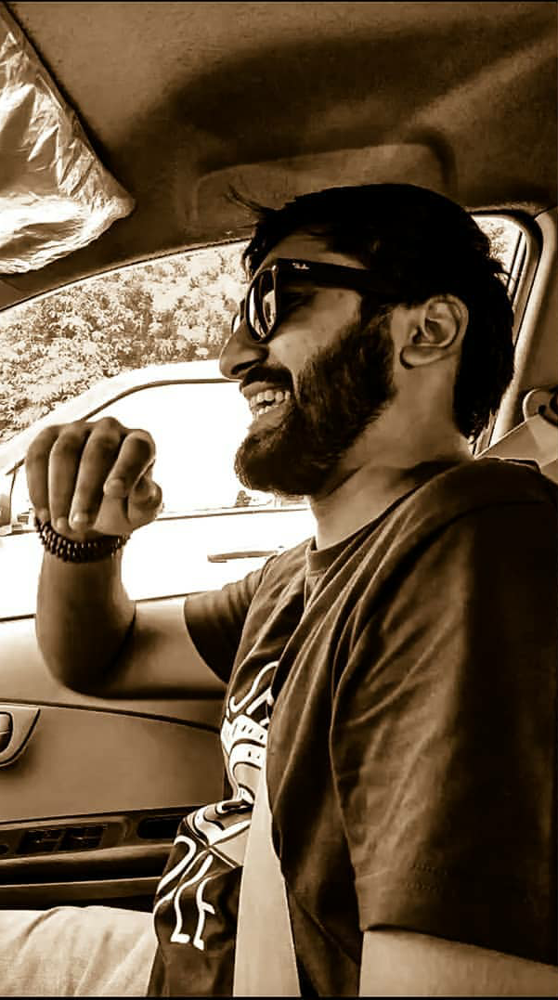

|
|
HOME GALLERY CONTACT |
|
HI! I'M ATISHAY JAIN
Photographer
Forever capturing the unique and beautiful moments of your life that will be passed down from one generation to the next.
My name is Atishay Jain and this is why I’m so passionate about photography. I will always pride myself in creating the irreplaceable legacy of memories for you and future generations. My hope is for future generations to open up albums on the living room floor and get a true sense of what you were really like.
I also love to photograph families and human relationships! I truly love what I do with a passion in my soul. I would describe my style as colorful, genuine and timeless. I treasure capturing all of the real, raw and honest emotions between you and your loved ones. Other passions of mine include going to concerts and getting down, spending time in nature, reading a good book and being a weirdo with my friends. |
 |